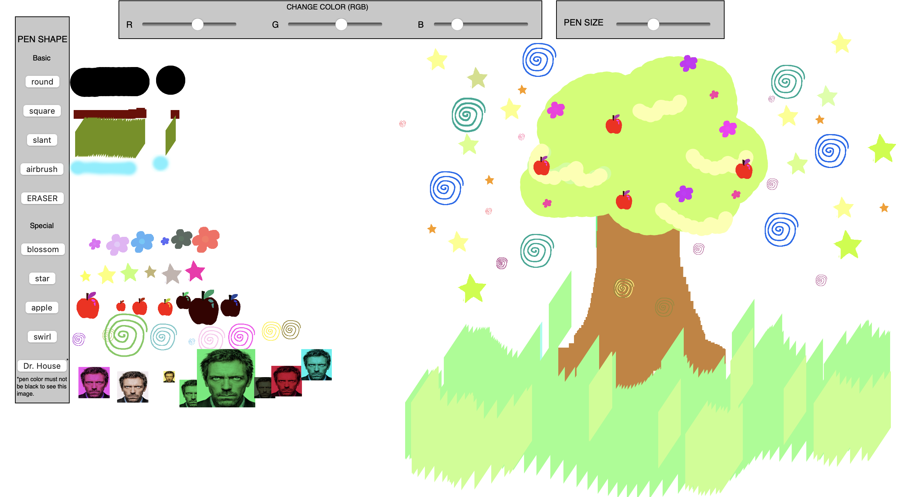
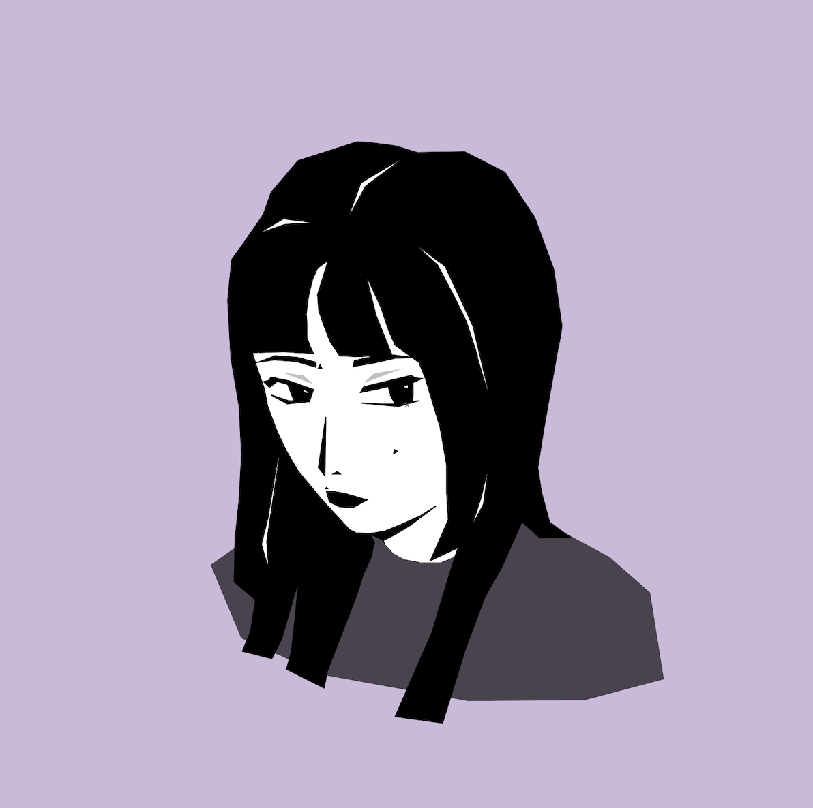
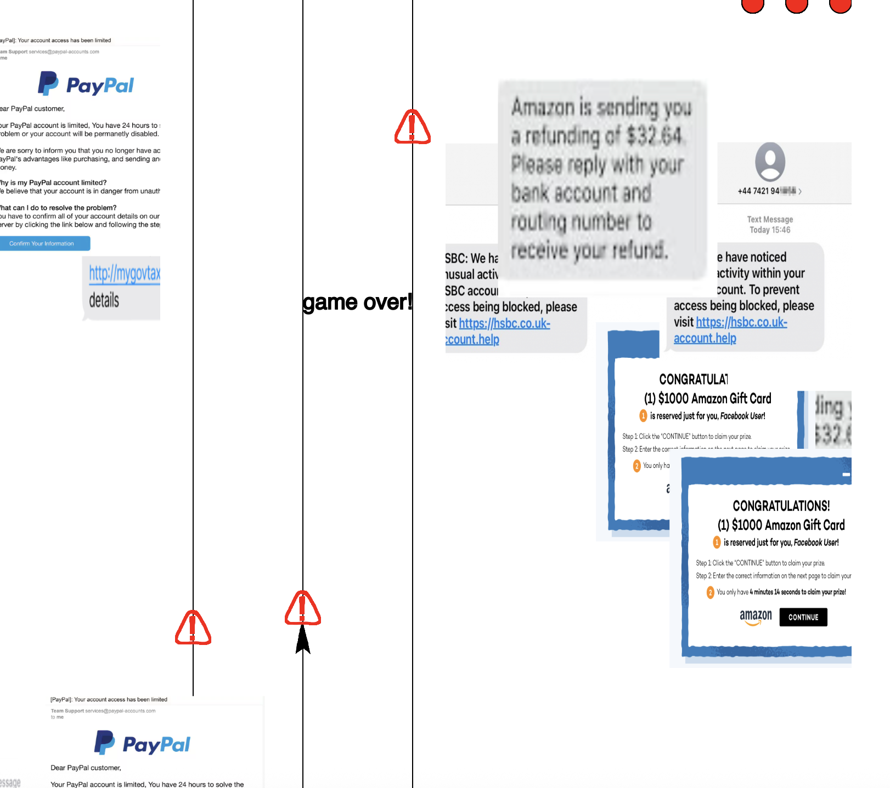

This drawing tool is meant to serve as a medium for the user's own input. It features the typical-type brushes, as well as stamps I drew digitally. I think one of the great things about art is that it is not barred to a specific group of people. I really enjoy seeing art other people have made, regardless of skill level. This drawing tool helps emphasize this sentiment.
drawing tool in action!
This representative self-portrait was first made in Adobe Illustrator, then had all its vertices written in p5.js. I drew myself in the way I usually draw characters, so this portrait reflects both my face and my illustration style.
This game uses left/right arrows or the A/D keys to help the player dodge 'scams', which travel downwards. The game ends when the player is hit 3 times. The message of the game is how scams are very common and people must be wary of potential scam attempts. One thing to note is that the speed of the 'scam' obstacles is super fast most times, but at a manageable speed other times, even when I have not edited the code (not sure why this is). Even at the unintended 'high speed', however, the game can still convey how scams are ubiquitous and how most people will inevitably encounter one.
